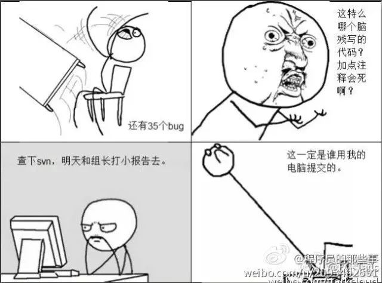
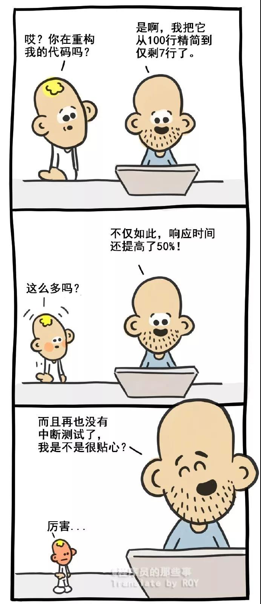

今天在公众号上看到了一篇非常不错的经验文章，文笔幽默风趣却不失对工作之感悟总结，分享记录一下，
原文作者：小叔不浪何以撩天下；
公众号： 前端你别闹；
原文标题：接手代码太烂 就要离职？看似洒脱 实则害了自己
—以下为原文内容—
事出有因
事情是这样的，前几天在朋友圈，我看到一朋友发表了一条说说：“入职新公司，从重构代码到放弃”，我就问他怎么了？他说，刚进一家新公司，接手代码太烂，领导让我先熟悉业务逻辑，然后去修复之前项目中遗留的bug，实在不行就重构。
关键是，离职的那位仁兄走之前，还跟我在QQ上说：老哥辛苦了，我写的很乱真不好意思，但我是故意的。
这几天，他都在想，要不要离职？
———
听完他的遭遇，我想先说一句，离职那位仁兄太狠了！！！
其次，我相信，这个问题很多人都遇到过。
每个新人去一家新公司都会觉得公司代码很烂，可能是因为他没被产品虐过。
其实，这种新员工很不错了，一看就是真萌新，重构这种事，老板看不到 KPI，出了事还得自己兜底，还会得罪人，费力不讨好，何必呢！
老前辈的警世良言一定要牢记：重构一时爽，头发不再长。
还有，工作了10年的码农，到了新公司，绝不会说这种话。
不过话说回来，能觉得模块代码烂，还能撸起袖子去改的程序员，真是很难得的一种精神。我身边 90%都是只是嘴上说，绝对不动手干的。下一次下一次下一次，无数的下一次造就了烂代码。

「 要不要重构 」
很多人口中的重构就是重写，而不是去改善现有的代码。
现在的有些工程师太浮躁, 动不动就要重构, 就跟很多的团队动不动就要搞一个框架一样。
说实话，以我个人的经验来说，绝大多数开发人员到新公司后，都会觉得代码很烂，但通常他不了解业务逻辑是怎么变化的，这种代码是在什么情况下写出来的，有什么特殊的背景（除了真的是乱搞的，绝大多数的“烂代码”一般都是有原因的：业务需求改改改，这个需求明天就要上线等等等等），有多少坑（很少有人能在极短时间内把所有的坑都找出来）。
如果贸然去重构，风险非常大。而且再说难听点，就算重构完了，也有可能是一堆新的“烂代码”替换老的“烂代码”。
所以，进了一家新公司，别动不动就重构，先了解项目的业务逻辑。

「 要不要离职 」
其实在我看来，如果仅仅因为接手代码太烂，就选择离职，那么你跳槽到下一个公司依然会面对同样的现状，因为几乎每个人，都会觉得自己公司的项目代码很烂。
我们先说说造成这种现象的原因是什么，首先，我们得相信，没有任何一个人故意把自己的代码写的很烂，每个人都想把自己的代码写的很优雅，扩展性很好，但是可能当初水平不够，在当时看似还不错的代码，日后在别人看来就是所谓的垃圾代码。
我们每个人都在进步，别说别人了，你现在看你三个月之前的代码，可能你都会觉得写的很垃圾，如果你没有这种感觉，只能说你在止步不前。
其次，技术更新换代太快，市场的变化也太快，产品自然也一直在演变，也许在当时看起来还不错的代码，随着时间的推移，功能的更新，代码的堆彻，慢慢就变成后来者眼中的烂代码了。
「 如何从烂代码中爬出来 」
假如你真的要接手别人的代码，怎样才能不被玩儿死呢？
虽然你可能会说，听了很多道理，依然交接不好代码，可作为经常被别人的代码玩得欲仙欲死的老司机，我有些话如鲠在喉，不吐不快。
当你被要求接管要离职的程序员的代码时，如果能注意以下几点，就有可能活着从他的代码里爬出来。
- 产品需求与业务流程文档
产品需求与业务流程文档，这些是你先要找到的，你接手的代码，必然和某个产品需求相对应，必然实现了某个业务流程，先了解产品需求和业务流程，才能更好的读代码。
假如你的团队就是没文档，Ok，也可以要求离职或转移战线的这位程序员把需求描述出来，把业务流程画出来。 - 测试环境
了解了产品需求和业务流程，最好能体验一下软件，从用户的角度来理解软件的使用。这个时候你要么需要生产环境，要么需要测试环境。哪个环境不重要，重要的是，你需要一个能Run，能体验的软件。 - 业务流程在代码层面的体现
负责交接代码给你的那位同事，要么在办离职，要么已经介入了其他产品，眼下很可能已无心恋战，但你心里要清楚，只有他才能提供代码层面的东西，比如类图、模块划分说明、数据流图、时序图、状态图等等。
所以，你需要他整理一些文档和图表出来。你可以告诉领导你需要上面的东西，让领导和他沟通，让他在离开之前准备好这些文档给你，并留一些时间以便你熟悉。 - 读代码，不死不休
有了产品需求，有了业务流程，有了代码设计相关的文档和图表，接下来你就该死磕代码了：
while（不懂）
{
读
} - 开发环境与调试
有的产品需要比较复杂的开发环境配置，一定要提前做好，让即将离开的同事辅导你搭建好开发环境，这样你就可以利用“调试”这个强大的武器来快速理解代码了。
调试是接手别人代码时的利器，如果你看不明白一个业务在代码层面是怎么体现的，也看不懂代码之间的调用关系，那最好的办法就是调试。从一个业务的起点所对应的代码开始调试，一步一步跟进去，就能快速理清函数调用链。 - 树立可实现可衡量的目标
程序员的工作交接，尤其是代码交接，怎样才算顺利完成呢？
这简直就是一个谜！
没人说得清楚。
所以，你最好给自己梳理一些可衡量的、可实现的目标。比如读懂A、B、C三个业务流程……
最好，找一个Bug或者一个新增的功能，带着目的去读代码、修改代码，有目的，有目标，有时间盒，就容易投入，容易读进去，容易掌握与Bug或新增功能相关的代码的逻辑与流程。 - 输出、分享与重构
你在读代码时，如果能撇开给你交接工作的程序员提供的文档，按自己的理解，自己绘制类图、数据流图、时序图、关键业务流程对应的函数调用关系链等，就能更快的掌握别人的代码。
如果你还能将你理解到的东西，讲给其他人听，并且讲明白，那Ok，你真的理解了别人交接给你的代码。
再进一步，如果你在理解现有代码的基础上，可以识别出哪些部分实现得逻辑不清晰或有待改善，然后可以结合业务与自己的理解将其重构，那就真的是完全接手了别人的代码，别人的代码与你的代码就没有差别了，它们终将成为你的代码。
「 最重要的事儿 」
如果你总是看见代码多就发愁，看见代码脏乱差就诅咒埋怨，看见代码逻辑复杂就头疼，搞不清调用关系就放弃，那你可能永远也变不成代码的主人，只能一次又一次被代码蹂躏。
所以，其实交接代码最重要的事儿，就是：
不要被浩渺如烟并且陌生怪诞的代码吓得不敢动弹，现在就开始读，立刻，马上，坚持十分钟，再坚持十分钟，你就能妙悟真谛。
最后，当你再碰到这种事儿的时候，请记住老前辈的这句警世良言：
那些不能将你击溃的代码，都将成为你成长的垫脚石。
如果你身边有朋友，正在接手别人代码，被逼的想要重构，请将这篇文章转发给他，普度芸芸众码农，是我们义不容辞的责任。